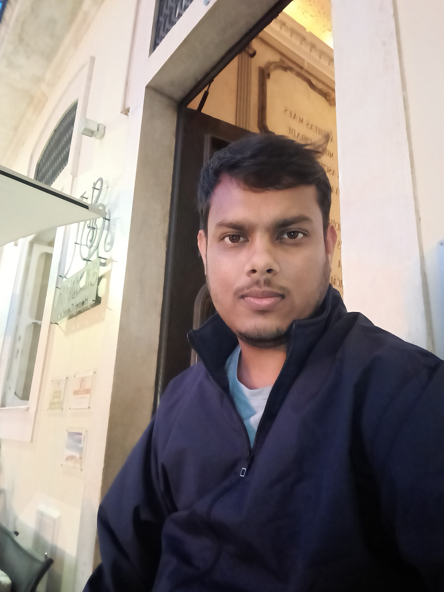

Pratick Sarkar
PhD Student
Indian Association for the Cultivation of Science (IACS), Kolkata, India

Research Interests
My research probes axion-like particles (ALPs) and dark matter through astrophysical observables. I study how an ALP background would imprint itself on the photon ring of a black hole, using the Event Horizon Telescope's image of M87*; how eV-scale ALP dark matter constrains the spectroscopy of the M87 galaxy, via the Raffelt–Stodolski conversion framework across different dark-matter density profiles; and how self-interacting ultralight dark matter would leave a signature in the stochastic gravitational-wave background, measurable by pulsar timing arrays such as NANOGrav, EPTA, and PPTA. Across all three, the aim is the same: using things we can already observe to test what dark matter and the strong CP problem's missing piece might actually be.
Education
PhD, Theoretical Astroparticle Physics
MSc in Physics
BSc in Physics (Honours)
Research experience
Visitor cum research associate, IACS, Kolkata
Academic Visits
Instituto Superior Técnico, University of Lisbon, Portugal
University of Coimbra, Portugal
Conferences & Workshops
SANGAM @HRI 2026, HRI Prayagraj
Light Dark World (LDW 2025), IFT Madrid
School on Gravitational Physics (IACSSGP 2025), IACS Kolkata
ML4HEP 2024, IOP Bhubaneswar
PHOENIX 2023, IIT Hyderabad
ICHEPAP 2023, SINP Kolkata
COSMOLOGY@CCSP2, Thanu Padmanabhan Centre, Gurugram
Technical Skills
Teaching Experience
Teaching Assistant, IACS Kolkata
Mathematical Methods on Basic Group Theory (postgraduate) — tutorial sessions and grading.